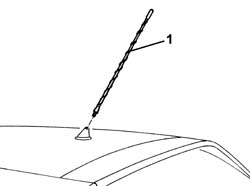

5570T61 MULTI-FUNCTION AERIAL - R R
- Path
- Procedures > 55 ELECTRICAL EQUIPMENT > 5570 ACCESSORIES > 5570T CAR RADIO AND CAR TELEPHONE > 5570T61 MULTI-FUNCTION AERIAL - R R
- Kind
- repair procedure (removal / refitting; the operation number is the code)
- Applies to
- all engines; all production periods
- Interactive page
- https://sloeber94.github.io/elrnDB-aGt/en/#/125001713
Applies to: all engines; all production periods
 Removing
Removing
 Refitting
Refitting1. Unscrew the aerial.

Applies to: all engines; all production periods
Refitting
RemovingCheck that the radio aerial is not damaged.
Screw in the aerial.
Topics that link to this page (7)
- N12 POOR RADIO RECEPTION
- N35 I.C.S. TELEPHONE DEVICE NOT WORKING
- N37 I.C.S. IS NOT CALCULATING ANY ROUTE
- N39 I.C.S. DETECTS INCORRECT POSITION
- P11 CENTRAL LOCKING / NOT WORKING WITH REMOTE CONTROL
- P15 LUGGAGE COMPARTMENT DOES NOT OPEN WITH REMOTE CONTROL
- 5570T59 MULTIPURPOSE AERIAL - R R WITH ROOF PANEL TRIM REMOVED